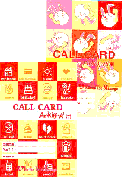

❶
The most productive way to communicate is by using glyph characters to
build words, those words can be visually symbolized with (single or
multiple) pictograms. Machines with extended software started out
with numbers, letters and basic punctuation symbols for guiding
compiled words, each region built them into encoded glyph slots
across localized areas (such as Japans Shift-JIS and Americans
ASCII). Due to the limited encoded formats being primitive to expressions, it
paved the way for punctuation type symbols produced into facial
expressions around emote like memes in the form of emoticons and
kaomoji, allowing them to gain world popularity.
An organization in 1991 called Unicode Consortium will push to
internationalize a new format for standardized encoded glyphs using
UTF (Unicode Transformation Format) trying to solve text corruption
for global communication across machines. (ecosystem for glyph
encoded characters)
Pictogram and Pictograph is interchangeable but 'Pictogram' is used most often in Japan between
the two and both are equal to Pictorial Words. (expressive or informative based images)
• We learn to read facial expressions, including hand signs around 6 to 7 months old, it carries into visual keystones for building survivalist information (like Nature, Food, Objects, etc). The popularity on current day emoji is not so inauspicious if you apply production with society.
• The pictogram like glyphs from prints and IBM is only a stepping stone because they don't seem to fit in with "mobile emoji" upbringing and its usage. Some early electric typewriters built-in Japan had pictogram type sets that kind of feel like stamps for labeling, we need to see reference codes and its usage to semi include or exclude them.
❷
Japans Commercialization of Computers, Pagers and Mobile Phones in 1994
start to become more affordable (all around), laws allowing the
consumers to personally own mobile phones is voted in, originally
being business related only (renting them out). In 1995-1999 Japans
tech savvy skills with help from others outside will make really big
advancements in pagers being able to receive text messages with
pictograms instead of just digits or prefixed-words and integrating
that into mobile phones via Short Message Service (SMS) email and web
apps to send and receive on the go without the need of a landline or
computer, at the same time trying to allow the user and their
contacts to still send from those devices.
NTT company
integrated Liquid Crystal Display (LCD) with pagers in 1987 for the
first time in Japan, it was called "NTT-Pocket Bell" and
utilizes receivable digits so the contact can leave a phone number
for the user to call back, later launching a subsidiary company named
Docomo in 1991, producing a new pager called "NTT-Docomo Pocket
Bell" in 1995-1996, its pagers contained the first (2-4) mobile
communication type pictograms (encoded in extra slots: Heart,
Telephone, Cup and Clock). TeleMessage company will adopt the NTT
Liquid Crystal Display (LCD) pager idea with the first of its kind in
Japan to include receivable prefixed-words.
When pagers began to trend in Japan, some companies decided to adopt the
early (2-4) pictograms created by NTT-Docomo (with own designs), so
to compete with others a few slowly added in more pictograms (to sort
of make a set) until one called Arkiss by TeleMesseage, that company
will build and promote its model lineup around them with
none-prefixed-words they called free-text in 1996 and its pagers had
32 + 50 animated ones consolidated on a single list called extended.
It is known for popularizing the coil poop encoded text-like
pictogram (w/o a face) and custom melodies. Surprisingly the
pictogram sets built in the Arkiss and others from its associated
(business alliance) brands look very close to what we know as 'emoji'
that fall under current day unicode standard. Just like many other
symbolized glyphs they adopt "new and old" meaning's over
time depending on relations to eras making them feel engrained, such
as (Rock, Paper, Scissors) is most seen as (Solid, Hi, Peace) ten
years later.
The pictogram support in NTT-Docomo Pocket Bell
relies on improvements to infonext network services and SENTY, NEXT
and 02-DO model lineups, the pagers running on 'infonext scooper' in
1998 had 27 for optional encoding and just like Arkiss the first
(2-4) is not counted in.
• The very first (2-4) pictograms is rarely if ever counted in a set, they will merged later. So if you have been curios why we have a Telephone+MobilePhone+Pager that could be why.
• Terms for Pictograms and Emoticons was kind of mixed at times in this era sprouting into current day.
• Mostly teens and people in their 20s are using pagers because they are cheap, portable, semi secretive and used for flirting. (they even nicknamed them)
• Other known pictogram sets with the coil poop (w/o a face): DDI Pockets Nov 20th 1996 P-Mail, NTT-Docomo Pocket Bell (infonext scooper) 1998, NTT-Docomo Charame PC software 1998.
• Popular wireless network services springing about depend on region and not Japan as a whole.
• It looks like Telemessage launched 'Free-Text' before Docomo's 'Free-Range'. (non-prefixed-words)
❸
To compete with other major carriers in Japan companies named
DigitalPhoneGroup followed by DigtalTukaGroup launched the Clearest,
Securest and Fastest cellular speed at the time in 1994 for Japan's
mobile phones. The DigitalPhoneGroup company decides to merge the
early computer and pager text type features along with their own 90
pictogram glyphs encoded in extra slots built-in a Short Message
Service (SMS) option called SkyMail on Nov 1st 1997, it was promoted
with a few other text-app like options and setup under a service they
called SkyWalker. Then a few months after the associates (business
alliances) of DigitalPhoneGroup named DigtalTukaGroup will launch
SkyWarp with SkyMail in China on Sep 20th 1998 and another named
KDDITukaGroup will launch SkyMessage with SkyMail in Japan on Oct
30th 1998, it was to strategize a gain over rivals using the
high-tech mobile phone service. Those text services called
'SkyWalker, SkyWarp and SkyMessage' adopted the same SMS software
made by the 'Logica' company (former Aldiscon) based on SkyWalkers
capabilities because they run on the same broadcast called J-Phone
hosted and branded out by DigitalPhoneGroup under their own model
lineups.
DigtalTukaGroup mentions being the first company to
provide a character messaging service with such e-mail functions for
mobile phones in China, similar to the SkyWalker launch in Japan.
[Sourced Site] SkyWarp logo represents, Communication "C"
is derived from "S" of "SkyWarp", and
communication on the earth is spread and resonates through "SkyWarp".
The color represents global communication by combining the blue that
reflects the possibilities and the future with the green that images
the environment, and the red that represents active communication as
an accent color.
[Sourced Site] Logica has a track record of
delivering Short Message Service (SMS) systems for mobile phone
services in Europe. Each Logica mobile system for the Japanese
operators is based on a foundation of new short message centre
installations, utilising Logica's Telepath solution (a short message
service centre), combined with upgrades to existing systems. These
centres have been enhanced to support Japan's unique mobile standard
and have played a significant role in helping the Japan Telecom
Operator Group increase subscriptions, improve revenues and reduce
'churn'. Customized applications are also available from Logica
Aldiscon or third parties through the use of Logica Aldiscon's open
Application Programming Interface (API). Logica also deployed the
world's first SMS product for 3G networks in Japan. (Logica
headquarters: Dublin, Ireland)
Former Group Names
*DigitalPhoneGroup (Digital Tokyo)
*DigtalTukaGroup (Tuca)
*KDDITukaGroup (TU-KA)
• The encoded coil poo face pictogram in SkyWalker is the first of its type to popularize from what I can tell. A few might have been designed around popular manga, cartoons and tamagotchi.
• Some of the (1-4) pictograms located on SkyWarp and SkyMessage's mini sized code charts built for pager like calling cards found on their archived sites does not match SkyWalker for some reason. I did run across SkyWarp phone emoji shot from 1998 and it matches SkyWalker including a paper back manual from SkyMessage early 2000s, there is also a problem with charts not being updated so they don't always match up with software built into the phone.
• Not just depending on year, the pictograms on supported models as well as input area, can vary in design (16x16, 12x12, 21x21, 24x24).
• It seems like the term for Emoji is being labeled on paper charts and the term Pictograms is being labeled on software like charts (Manuals to Web sites).
• The animated pictograms first added into J-Sky is based on similarities to the ones built on the Arkiss (pager) extended list.
• DigitalPhoneGroup, DigtalTukaGroup and its (J-Phone models) along with IDO had BW monochrome touch screen mobile phones on the market built by Pioneer between 1996-1999 in Japan.
Maybe the price was to expensive for people's taste and the OS + UI was hard to understand but lets not forget about small convenient tech and durability being major hits, like the bar and flip phones.
❹
A
infant form of i-Mode, J-SkyWeb and EZWeb called SkyWeb (can gather
news, sports, radio, etc) started by DigitalPhoneGroup and newly
added to selected SkyWalker models as an edition in 1998.
DigtalTukaGroup merges into DigitalPhoneGroup's J-Phone model
lineup and SkyWarp syncs into its predecessor SkyWalker, the service
umbrella turns into J-SkyWalker (SkyWalker) and J-SkyWeb (SkyWeb)
edition in late 1999, branding out new phones under J-Sky Service in
2000.
When NTT-Docomo's i-Mode launched on Feb 22nd 1999 it
was a big hit because you can do things like surf the web for the
first time on a mobile phone, all kinds of service message options
like AOL, built-in email with support for attachable hyperlinks, the
pictogram set was designed around a minimalistic style using Kaomoji,
Manga, Weather and Sports with similarities to Arkiss, P-Mail,
SkyWalker, SkyWarp, SkyMessage, NTT-Docomo Pocket-Bell, NTT-Docomo PC
Charme (cmailer).
On Nov 25th 1999 the KDDITukaGroup adopts
DDIGroup's EZWeb to go along with SkyMessage sort of like J-SkyWalker
+ J-SkyWeb combo, the other KDDI associates like AU will also add
EZWeb. (TUKA_By_KDDI & AU_By_KDDI)
It is around this time in Japan the term for glyph encoded Pictograms
and Pictographs
was being more known as Emoji
due to all the phone manuals and internet sites created by the
associates of DigitalPhoneGroup, NTT-Docomo, DDI, IDO, Tuca, AU, KDD,
KDDI, TU-KA, and Astel. The pagers and its computer software
associates that started to call them Pictograms
dwindle geographically.
• In early 1999-2000 mobile phones in Japan begin adding HDML and HTML web-email site connection browsers integrated with encoded pictograms and some of those companies extended them using server side. This era in Japan will introduce RGB spectrum displays with built-in cameras utilizing image capture software for web and email like sharing.
• NTT-Docomo's i-Mode (HTML Guides) mainly used Pictographs and Picture Symbols early 1999. The complete set was designed by Shigetaka Kurita (it was supposed to be a proof of concept).
• Cant tie emoji growth to carrier populairity (i-mode, EZWeb, J-Sky was optional, same with glyph encodings). We would need to know "all device specs" to understand Japans emoji growth data at a pinpoint level stemming from 1995.
❺
Apples
iPhone was born from the popularity of the iPod and released on June
29th 2007 with AT&T. It did not have emoji or many options the
mobile phones in Japan had, as well as not being able to install 3rd
party apps right out of the box. In order for Apple to compete in
that market they had to add the Appstore and join a local carrier, so
they decide to partner with SoftBank (former Vodafone, J-Phone,
DigitalPhoneGroup) to release the iPhone-3G running iPhoneOS_2.0 in
Japan on July 11th 2008. Not long after Apple with its team of
people will add and design emoji support using their original
structure so the users on that carrier network can cross communicate
with other product lines. The first set included was encoded with
hexadecimal PUA (Private Use Area) char-names linked to proprietary
32x32 'CGBI_PNGS' built in a proprietary '.artwork' file
(\System\Library\Frameworks\UIKit.framework\Keyboard-Emoji.artwork)
added in iPhoneOS_2.2-Beta2 on Oct 20th 2008 and officially released
in iPhoneOS_2.2 on Nov 21st 2008, further producing it into a
proprietary truetype color font created on March 5th 2010
(AppleColorEmoji) launching with two set_sizes (20x20 and 40x40) on
Mac_OSX_Lion_10.7, circulated around iOS_4.2 release, later building
it into a refactored version for iOS_5.1+. Originally you had to be
on Softbank's mobile carrier to unlock the emoji keyboard but the
users not on the network found alternatives using signed Apps or Root
access via jailbreak. The jailbreak method to unlock the emoji
keyboard used the most direct route by modifying the
(\User\Library\Preferences\com.apple.Preferences.plist [bool key
>KeyboardEmojiEverywhere< to true]). Someone also built a
installable and used a popular pre-added jailbreak repository on the
homebrew store "Cydia" to host.
• Google began mapping out the early popular sets (SoftBank, KDDI, Docomo) to their own PUA codes in 2006 for cross support reaching to 805 by March 2009. Unicode and its early emoji draft creators will use those PUA as internal identifiers (ID) to unify out a set using existing and non existing encoded slots.
• Google's 'gmail' newly added a emoji set to web side on October 23rd 2008.
• Apple created a new font table called 'sbix' (AppleColorEmoji) to embed color images and Google will build their own font tables 'CBDT/CBLC' (NotoColorEmoji) to achieve the same thing being the first to standardize it in OpenType across the two. Both sbix and cbdt/cblc has built-in options to incorporate multiple sized images to hold quality when scaled to mimic vectorizing.
• AndroidEmoji black and white monochrome truetype font built around Nov 30th 2011 (Android 4.1) will merge with color emoji PNGS from Google Hangouts, producing NotoColorEmoji truetype color font in 2013 (Android 4.3).
• The first AppleColorEmoji font was mapped with PUA + UNI, starting out with 502 in glyf and 960 in cmap, then when it landed on iOS it switched to UNI + PUA for intact cross support, dropping all PUA related stuff only within Mac versions along the way. Need to follow font tables (glyf, cmap, and morx) + dupe type in 'sbix' to have a better understanding on those integrations.
• Historic E50A (Shibuya 109) was hidden from iOS_7.0 emoji keyboard layout, with complete removal from System + AppleColorEmoji in iOS_8.3-Beta2. (it should be added back in)
• Stock AppleColorEmoji set_sizes in sbix (scaled graphics) varies across iOS and Mac.
- iOS_5.1 [20x20, 40x40, 96x96]
- iOS_7.0 [40x40, 64x64, 96x96]
- iOS_8.0 [40x40, 64x64, 96x96, 160x160]
- iOS_9.1 [40x40, 64x64, 96x96]
- MAC_10.7 [20x20, 40x40]
- MAC_10.7.4 [20x20, 40x40, 48x48, 64x64, 96x96, 160x160]
- MAC_10.8 [20x20, 32x32, 40x40, 48x48, 64x64, 96x96, 160x160]
- MAC_10.13.6 [20x20, 26x26, 32x32, 40x40, 48x48, 52x52, 64x64, 96x96, 160x160]
• The first set was designed by Angela Guzman, Raymond Sepulveda and Ollie Wagner
❻
Each year Unicode Emoji Subcommittee (ESC) and its other Unicode Technical Committee (UTC) members accepts and
rejects newly proposed emoji for global glyph encoded standards.
A draft proposal for the first standardized unicode encoded emoji was submitted on Aug
3rd 2007 and the emojis from (SoftBank, NTT-Docomo and KDDI) was
officially pickled into a 722 set releasing it in 'Unicode Standard Version 6.0' on October 11th 2010.
If you made it here, official emoji fan :-)
* Anyone is welcome to back research this peace or reference it, please don't copy though
without giving credit, I might notice because it has 'untold' parts.
* The amount of associates related to each other makes this subject a challenge.
* Check out Emojipedia for visuals archived with historic side notes.
* Shout out to some other deep emoji researchers (@Matt_Alt, @Socialized, @Informoji, @KeithBroni)
* WayBack Machine is full of adventures
About me:
Emoji Expert in Miscellaneous
I have been around the emoji field for about 5 years doing all kind of
things, like pro-bono to freelancing for @jeremyburge (Emojipedia
founder) & @mobyceo (EmojiOne founder). I have fun messing around
with Python, Graphics, UI layouts, Proposing for new emojis and
helping others with font side stuff (related to emoji all together).
P.S: Emoji needs text just like Math needs symbols
mn--( 0_0 )--nm
Logos are not specific to order.
Companies


Services


Telemessage Pages
Arkiss-A2
& Arkiss Card & Others


PRE'LL-A2
& PRE'LL FX

KALEN FX

STELLA & STELLA 2000FX (color)
NTT-Docomo Pagers

Charme_Cmmail4_PC
D17 PB (infonext scooper)
NEXT PB (infonext scooper) IMG June 1998